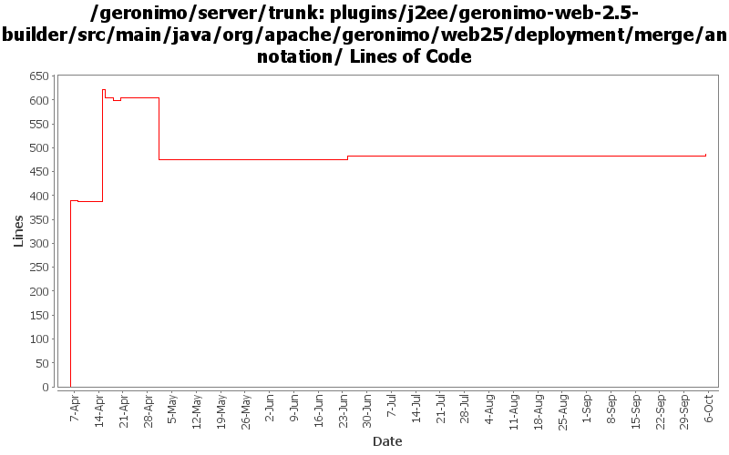

[root]/plugins/j2ee/geronimo-web-2.5-builder/src/main/java/org/apache/geronimo/web25/deployment/merge/annotation

| Author | Changes | Lines of Code | Lines per Change |
|---|---|---|---|
| Totals | 16 (100.0%) | 743 (100.0%) | 46.4 |
| xuhaihong | 10 (62.5%) | 647 (87.1%) | 64.7 |
| djencks | 6 (37.5%) | 96 (12.9%) | 16.0 |
handle MultipartConfig annotations
6 lines of code changed in 1 file:
GERONIMO-5190 use openejb-jee jaxb tree for spec dds
90 lines of code changed in 5 files:
a. Calculate web permissions while starting the web module to support setServletSecurity feature in Servlet 3.0
b. Initial support ServletContainerInitializer, some improvements might be needed, such as use ASM ?
c. Support ORDERED_LIBS ServletContext attribute
14 lines of code changed in 1 file:
1. Support http-omission-method configuration in web deployment xml file
2. Move out the http method checking logic, so we could throw Exception as early as possible
7 lines of code changed in 1 file:
Revert the changes about supporting http-method-omission, I have some misunderstanding for it
0 lines of code changed in 1 file:
Support omissionHttpMethod configuration in security-constraint imported in servlet 3.0
2 lines of code changed in 1 file:
Support ServletSecurity annotation scan, some more work might need for it while adding Servlet dynamically
233 lines of code changed in 1 file:
GERONIMO-5037 Add missing support for AsyncListener
1 lines of code changed in 1 file:
GERONIMO-5037 Support Servlet 3.0 annotation and fragment web file
390 lines of code changed in 4 files: